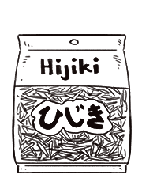

dried hijiki
Hijiki, or 羊栖菜, is a brown edible seaweed, often sold in dry form. Hijiki is rich in calcium and iron.
Recent studies have shown that hijiki contains potentially toxic quantities of inorganic arsenic, and the food safety agencies of several countries (excluding Japan), including Canada, the United Kingdom, and the United States, have advised against its consumption (ref).
seaweed
There are 3 main groups of edible seaweed: Red algea, green algea and brown algea. Most edible seaweeds are marine algae whereas most freshwater algae are toxic. Seaweed contains high levels of iodine and calcium. It is possibly a source of vitamin B12 (see ref), but the amount is variable and therefore, not dependable.
Because it comes from the sea, seaweed contains sodium. It should be avoided by anyone on a sodium-restricted diet. Wakame has the highest sodium content, with kelp and laver having significantly less.